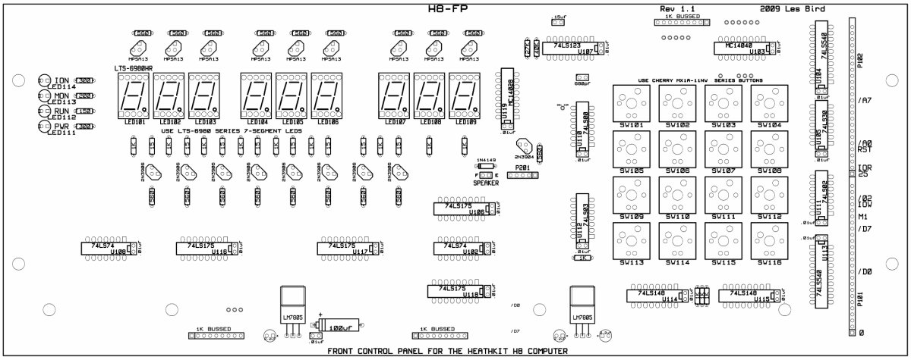
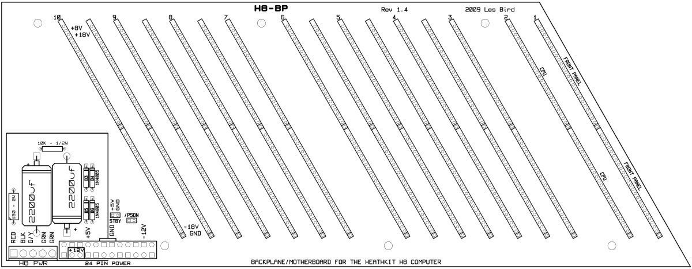
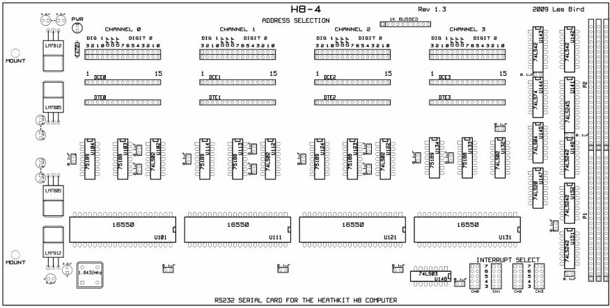
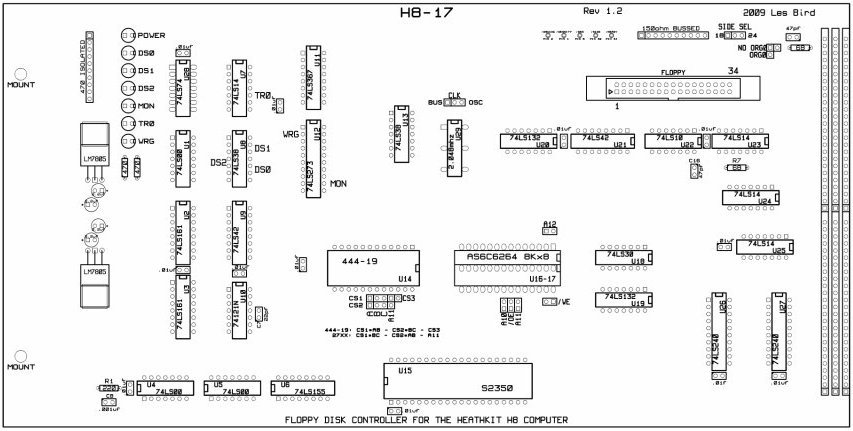
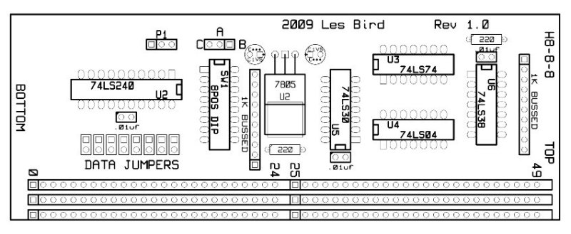
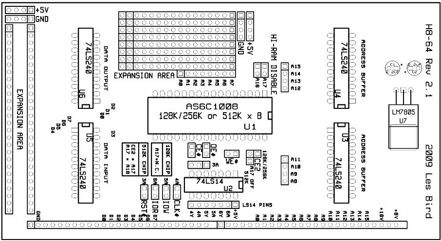
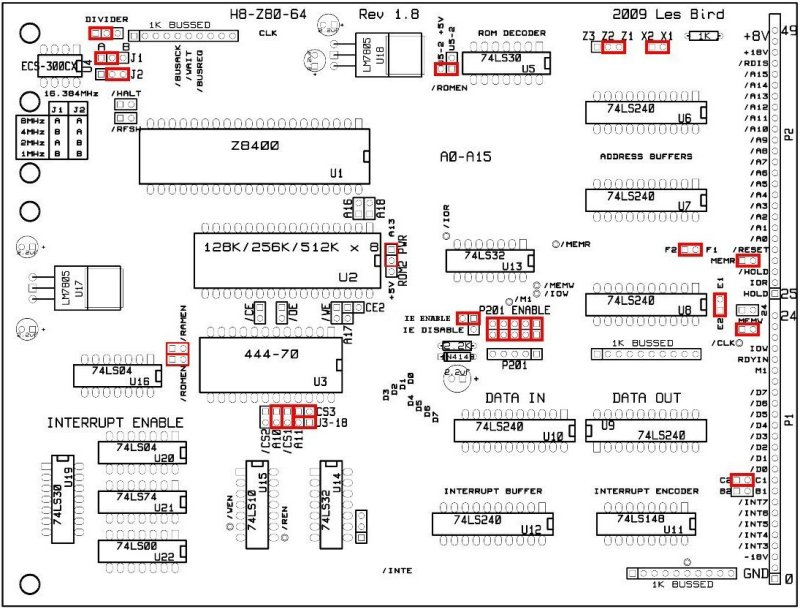

H8 Hardware
This page contains H8 expansion boards. These are brand new redesigned and modernized (when possible) PCBs.
Feel free to download the Gerber files if you wish to produce your own boards. I use Ourpcb to manufacture my boards. They have good prices and include a silkscreen and solder mask.
For those that want to modify my cards you can download a complete set of all my KiCad projects here (9.5mb).
H8-FP Front Control Panel
Material List
A new front control panel design for the Heathkit H8 computer.

H8-FP Gerber Files
H8-BP Backplane
Material List
A new backplane/motherboard for the Heathkit H8 computer with ATX-style 24-pin power connector.

H8-BP Gerber Files
H8-Z80-64 Rev 2.5

Track Layout

(Track Layout hi-res version)
{kind=link}
Documentation (pdf)
Address decoder schematic (pdf)
H8-Z80-64 CPU/GIDE Gerber Files
KiCad Project File
H8-4
Material List
A replica of the original H8-4 Multi Serial Port Card from Heath but without the 20ma loop circuitry.

Docmentation (pdf)
H8-4 Gerber Files
H8-17
Material List
A replica of the WH17 Disk Controller from Heath. Modified to allow easy configuration for ORG0 and non-ORG0 systems as well as adding some diagnostic LEDs. Also note that there is an accompanying 1K adapter card that will convert the signals from the memory socket to a pair of 2114s as the original card had. This is for better compatibility with non-ORG0 systems.

Documentation (pdf)
H8-17 Gerber Files
H8-17 1K Adapter Gerber Files
H8-8-8
A smaller more compact version of the HA8-8 Extended Configuration card from Heath. This card inserts facing forward as opposed to the original which faced toward the back. This card along with the accompanying ROM (Part #444-70) converts an H8 computer to an ORG0 system. The ROM is supplied on a 2732 EEPROM which means you will need to configure your CPU card accordingly.

Documentation (pdf)
H8-8-8 Gerber Files
H8-64
A single-chip 64K RAM card with mini-prototyping area for ORG0 H8 systems.

Documentation (pdf)
H8-64 Gerber Files
H8-Z80-64 Rev 1.8
This PCB has been replaced by the Rev 2 board. It is shown here only for reference.

H8-Z80-64 CPU Card (108KB zip file)
Documentation (pdf)
SEBHC.ORG
May 19, 2013